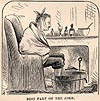

){kind=link}
){kind=link}

|
I LAUNCHED out as a lecturer, now, with great boldness. I had the field all to myself, for public lectures were almost an unknown commodity in the Pacific
market. They are not so rare, now, I suppose. I took an old personal friend along to play agent for me, and for two or three weeks we roamed through Nevada and
California and had a very cheerful time of it. Two days before I lectured in Virginia City, two stagecoaches were robbed within two miles of the town. The daring act
was committed just at dawn, by six masked men, who sprang up alongside the coaches, presented revolvers at the heads of the drivers and passengers, and
commanded a general dismount. Everybody climbed down, and the robbers took their watches and every cent they had. Then they took gunpowder and blew up
the express specie boxes and got their contents. The leader of the robbers was a small, quick-spoken man, and the fame of his vigorous manner and his intrepidity
was in everybody's mouth when we arrived. The night after instructing Virginia, I walked over the desolate "divide" and down to Gold Hill, and lectured there. The lecture done, I stopped to talk with a friend, and did not start back till eleven. The "divide" was high, unoccupied ground, between the towns, the scene of twenty midnight murders and a hundred robberies. As we climbed up and stepped out on this eminence, the Gold Hill lights dropped out of sight at our backs, and the night closed down gloomy and dismal. A sharp wind swept the place, too, and chilled our perspiring bodies through. "I tell you I don't like this place at night," said Mike the agent. "Well, don't speak so loud," I said. "You needn't remind anybody that we are here." Just then a dim figure approached me from the direction of Virginia -- a man, evidently. He came straight at me, and I stepped aside to let him pass; he stepped in the way and confronted me again. Then I saw that he had a mask on and was holding something in my face -- I heard a click-click and recognized a revolver in dim outline. I pushed the barrel aside with my hand and said: "Don't!" He ejaculated sharply: "Your watch! Your money!" I said: "You can have them with pleasure -- but take the pistol away from my face, please. It makes me shiver." "No remarks! Hand out your money!" "Certainly -- I -- " "Put up your hands! Don't you go for a weapon! Put 'em up! Higher!" I held them above my head. A pause. Then: "Are you going to hand out your money or not?" I dropped my hands to my pockets and said: "Certainly! I -- " "Put up your hands ! Do you want your head blown off? Higher!" I put them above my head again. Another pause. "Are you going to hand out your money or not? Ah-ah -- again? Put up your hands! By George, you want the head shot off you awful bad!" "Well, friend, I'm trying my best to please you. You tell me to give up my money, and when I reach for it you tell me to put up my hands. If you would only -- . Oh, now -- don't! All six of you at me! That other man will get away while. -- Now please take some of those revolvers out of my face -- do, if you please! Every time one of them clicks, my liver comes up into my throat! If you have a mother -- any of you -- or if any of you have ever had a mother -- or a -- grandmother -- or a -- " "Cheese it! Will you give up your money, or have we got to -- . There-there -- none of that! Put up your hands!" "Gentlemen -- I know you are gentlemen by your -- " "Silence! If you want to be facetious, young man, there are times and places more fitting. This is a serious business." "You prick the marrow of my opinion. The funerals I have attended in my time were comedies compared to it. Now I think -- " "Curse your palaver! Your money! -- your money! -- your money! Hold! -- put up your hands!" "Gentlemen, listen to reason. You see how I am situated -- now don't put those pistols so close -- I smell the powder. You see how I am situated. If I had four hands -- so that I could hold up two and -- " "Throttle him! Gag him! Kill him!" "Gentlemen, don't! Nobody's watching the other fellow. Why don't some of you--. Ouch! Take it away, please! Gentlemen, you see that I've got to hold up my hands; and so I can't take out my money -- but if you'll be so kind as to take it out for me, I will do as much for you some -- " "Search him Beauregard -- and stop his jaw with a bullet, quick, if he wags it again. Help Beauregard, Stonewall." Then three of them, with the small, spry leader, adjourned to Mike and fell to searching him. I was so excited that my lawless fancy tortured me to ask my two men all manner of facetious questions about their rebel brother-generals of the South, but, considering the order they had received, it was but common prudence to keep still. When everything had been taken from me, -- watch, money, and a multitude of trifles of small value, -- I supposed I was free, and forthwith put my cold hands into my empty pockets and began an inoffensive jig to warm my feet and stir up some latent courage -- but instantly all pistols were at my head, and the order came again: They stood Mike up alongside of me, with strict orders to keep his hands above his head, too, and then the chief highwayman said: "Beauregard, hide behind that boulder; Phil Sheridan, you hide behind that other one; Stonewall Jackson, put yourself behind that sage-bush there. Keep your pistols bearing on these fellows, and if they take down their hands within ten minutes, or move a single peg, let them have it!" Then three disappeared in the gloom toward the several ambushes, and the other three disappeared down the road toward Virginia. It was depressingly still, and miserably cold. Now this whole thing was a practical joke, and the robbers were personal friends of our in disguise, and twenty more lay hidden within ten feet of us during the whole operation, listening. Mike knew all this, and was in the joke, but I suspected nothing of it. To me it was most uncomfortably genuine. When we had stood there in the middle of the road five minutes, like a couple of idiots, with our hands aloft, freezing to death by inches, Mike's interest in the joke began to wane. He said: "The time's up, now, aint it?" "No, you keep still. Do you want to take any chances with these bloody savages?" Presently Mike said: "Now the time's up, anyway. I'm freezing." "Well freeze. Better freeze than carry your brains home in a basket. Maybe the time is up, but how do we know? -- got no watch to tell by. I mean to give them good measure. I calculate to stand here fifteen minutes or die. Don't you move." So, without knowing it, I was making one joker very sick of his contract. When we took our arms down at last, they were aching with cold and fatigue, and when we went sneaking off, the dread I was in that the time might not yet be up and that we would feel bullets in a moment, was not sufficient to draw all my attention from the misery that racked my stiffened body. The joke of these highwayman friends of ours was mainly a joke upon themselves; for they had waited for me on the cold hill-top two full hours before I came, and there was very little fun in that; they were so chilled that it took them a couple of weeks to get warm again. Moreover, I never had a thought that they would kill me to get money which it was so perfectly easy to get without any such folly, and so they did not really frighten me bad enough to make their enjoyment worth the trouble they had taken. I was only afraid that their weapons would go off accidentally. Their very numbers inspired me with confidence that no blood would be intentionally spilled. They were not smart; they ought to have sent only one highwayman, with a double-barrelled shot gun, if they desired to see the author of this volume climb a tree.  However, I suppose that in the long run I got the largest share of the joke at last; and in a shape not foreseen by the highwaymen; for the chilly exposure on the "divide" while I was in a perspiration gave me a cold which developed itself into a troublesome disease and kept my hands idle some three months, besides costing me quite a sum in doctor's bills. Since then I play no practical jokes on people and generally lose my temper when one is played upon me. |